Tools & Blocks
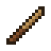
Training Stick
- Right-click your cat: open its inventory
- Hit a cat: shoo it away, no damage (works like a bare hand on anything else)
- Right-click the air: give all your cats in range an order (sit / follow / wander). The range is 2–32 blocks and shows as a light blue ring while you hold the stick
- Right-click a chest, barrel or shulker box: nearby cats put their storage away (not their equipment)
- Right-click a Cat Closet: only the clothes go in
- Hit a cat in a mob costume to see its quirk right away
Recipe


- Stick
- Leather
(any arrangement)
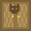
Cat Closet
- A place for every outfit, 64 each
- Scroll with the mouse wheel; empty places show which outfit goes there
- Shift-click or use a hopper and it sorts everything automatically
Recipe
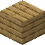

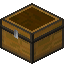
- Planks (any)
- String
- Chest
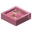
Cat Food Bowl
- Holds fish only (raw or cooked cod and salmon); hoppers work too
- Hurt cats (strays too) within about 10 blocks come and eat to heal; the fish is used up
- Sitting or leashed cats don't come
Recipe

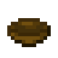
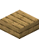
- Pink Dye
- Bowl
- Wooden slab (any)
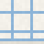
Cat Milk Dish
- Right-click with a milk bucket to fill it (an empty bucket takes the milk back)
- Cats nearby come for a sip now and then, lap for about 5 seconds and show hearts
- The milk never runs out; the same cat comes back after about 6 in-game hours
Recipe
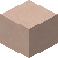
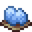
- White Terracotta
- Light Blue Dye
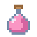
Kitten Potion
- Right-click a grown cat (your own or a stray) to turn it back into a kitten
- Name, coat, owner, equipment, storage and build stay the same; it grows up again
- You get the glass bottle back
Recipe
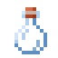
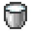
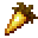

- Glass Bottle
- Milk Bucket
- Golden Carrot
- Egg
(any arrangement)
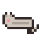
Cat Doll
- A tamed cat that dies becomes this doll, with all its equipment and storage (it won't burn or despawn)
- Right-click to place it: it looks like your cat, asleep
- When its owner feeds the placed doll a fish, the cat floats down and comes back
- Cats lost in the void leave no doll